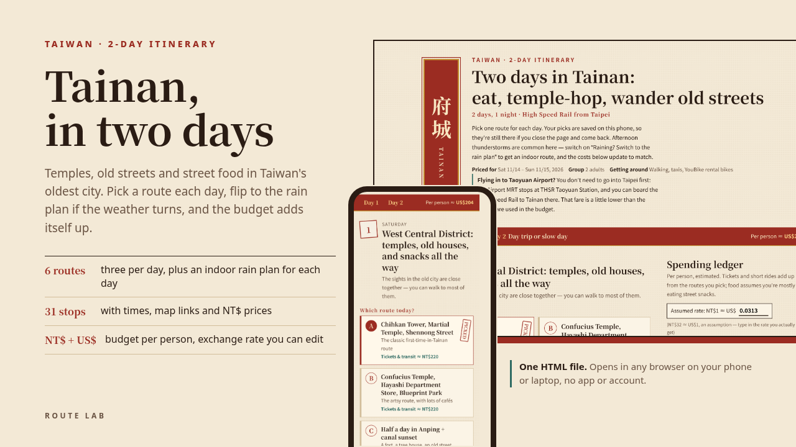

2-DAY ITINERARY · TAIWAN
A weekend in Taiwan's oldest city: temples, Japanese-era buildings and street food in West Central on day one, then a museum, a mangrove raft ride and a salt mountain, or a slow market morning, before the train home.
Below is a free outline of the itinerary: where each day goes, what to book, and what it costs. The download adds the stop-by-stop times, a Google Maps link and a checked price for every stop, and a budget that adds itself up as you pick.

Each day has two or three plans to choose from and an indoor plan for bad weather. These are the neighbourhoods and the main stops; the times and the order are in the download.
Salty congee for breakfast, Chihkan Tower, the Martial Temple and Grand Mazu Temple, lunch along Guohua Street and Shennong Street once the lanterns are on. Or the artsy route: the Confucius Temple, Hayashi Department Store, Blueprint Culture Park and Garden Night Market. Or half a day in Anping: the Old Fort, Old Street, the Tree House and the canal at sunset.
Rain plan: National Museum of Taiwan Literature, Hayashi and the covered Yongle Market
The Chimei Museum and Tainan Metropolitan Park, easy going with older travellers. Or a hired car to the Sicao Green Tunnel's bamboo rafts, Qigu Salt Mountain and a seafood lunch. Or sleep in, then Shuixian Temple Market, Zhengxing Street and Haian Road.
Rain plan: A whole day inside the Chimei Museum
Things that change how you plan the trip, from the research behind the itinerary.
Per person, from the prices on the itinerary. The ranges depend on which plan you pick each day; the download has every line.
| Item | Per person |
|---|---|
| High Speed Rail Taipei to Tainan and back, standard car | NT$2,700 |
| Hotel, 1 night (per-person share of a double, estimate) | NT$1,600 |
| Station to city centre and back (estimate) | NT$50 |
| Tickets and short rides, both days | NT$470 – NT$1,790 |
| Food, mostly street snacks | NT$1,300 |
| Total | NT$6,120 – NT$7,440about US$190 – 235 |
With the default routes the page comes to NT$6,520 (about US$200) per person, train and hotel included. Prices were checked in October 2026 and can change; confirm before you go.
If you want to see how the page works first, the free sample is one day in Tainan: two routes, 10 stops, no rain plan, and no train or hotel in the budget.
The paid itinerary is the full weekend: both days, three routes a day, rain plans, the High Speed Rail and a hotel night in the budget, and notes on cash and night-market days.
One HTML file for your phone or laptop. No app, no account. It doesn't book anything.
US$9 on Gumroad, with a refund within 14 days if the file is broken or won't open.
This itinerary is also in the Trip Page Bundle (US$29): Tokyo, Osaka & Kyoto, Hokkaido and Tainan plus the group trip template.